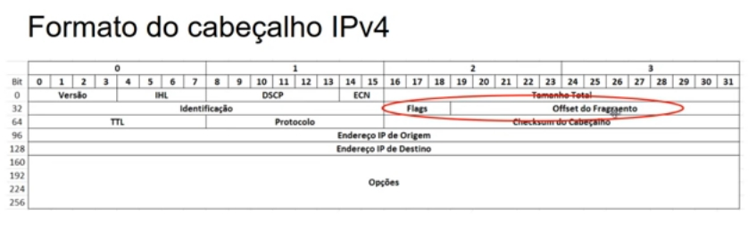
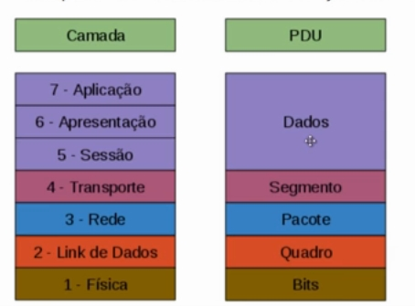
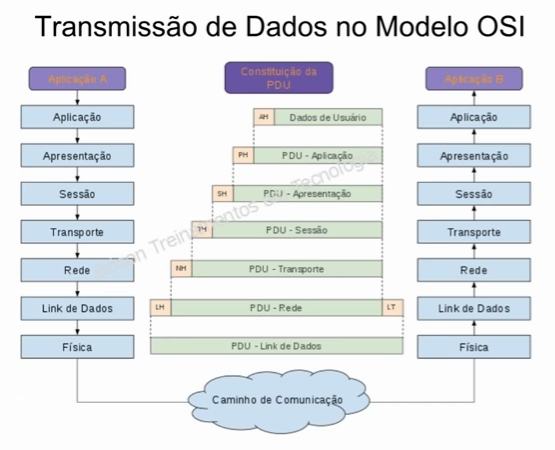

Na camada de internet da pilha TCP/IP, os dados provenientes da camada de transporte são empacotados em PDUs denominadas pacotes. Um pacote IPv4 é composto por um cabeçalho e um campo de dados, que contém os dados provenientes da camada superior (transporte).
Veja abaixo o encapsulamento de um datagrama IPv4:
A área cinza é o datagrama IP, os dados e o cabeçalho dele compõe os dados do quadro.
Vjea o formato do cabeçalho IPv4:
Podemos ver que ele tem 4 octetos, 32 bytes (contados a partir do 0), e os nomes dos campos do cabeçalho na ordem que aparecem.
Esses são os campos do cabeçalho IPv4:
Esse é o "resumão" com os campos e os tamanhos deles:
| Estrutura de um Pacote IP |
|---|
| Versão (4 bits) |
| Tamanho do Cabeçalho (4 bits) |
| DSCP (6 bits) |
| ECN (2 bits) |
| Tamanho Total (16 bits) |
| Identificação (16 bits) |
| Flags (3 bits) |
| Offset de Fragmento (13 bits) |
| Tempo de Vida - TTL (8 bits) |
| Protocolo (8 bits) |
| Checksum do Cabeçalho (16 bits) |
| Endereço IP de Origem (32 bits) |
| Endereço IP de Destino (32 bits) |
| Opções (32 bits) |
| Dados (até 64 Kb) |
O Modelo OSI (Open System Interconnect), é um modelo em camadas projetado para fornecer um framework para padronização de comunicação em sistemas de computadores.
Entender o modelo OSI é muito importante para quem deseja entender o funcionamento de redes de computadores, e é um tópico onipresente em testes de certificação, tais como Cisco CCNA e CompTIA Network+.
Padrões são necessários para promover interoperabilidade entre equipamentos de fabricantes distintos, e permitir economia de escala.
O modelo OSI foi desenvolvido pela ISO para facilitar a interconexão de sistemas de computadores, a partir do qual protocolos de comunicação de redes podem ser criados.
Trata-se de um modelo abstrato, conceitual, que traz o funcionamento de um protocolo ideal em redes de computadores.
O modelo OSI é composto por sete camadas:
| Camada de Aplicação |
| Camada de Apresentação |
| Camada de Sessão |
| Camada de Transporte |
| Camada de Rede |
| Camada de Link de Dados |
| Camada Física |
Esses são os princípios da divisão em camadas:
O modelo OSI garante que haja interoperabilidade entre produtos de fabricantes distintos, devido à padronização dos protocolos de comunicação.
Uma rede é constituída por equipamentos e sistemas de diversos fabricantes distintos, como roteadores e switches Cisco, sistemas Microsoft ou Linux, etc., e para que esses elementos possam se comunicar sem problemas, é necessária a padronização dos processos de comunicação.
O processo de padronização também permite o barateamento de custos, pois não ficamos reféns de sistemas proprietários.
Nas camadas do modelo OSI, cabeçalhos contendo informações são adicionados aos dados a serem transmitidos, em um processo denominado "encapsulamento". Encapsulamento é empacotar dados com informaçoes adicionais em cada camada.
Veja abaixo o processo de encapsulamento:
Em cada camada, damos um nome específico ao conjunto de dados com informações encapsuladas. Chamamos a esses conjuntos de PDU (Protocol Data Unit).
Veja as diferenças das camadas:
Trata da sinalização de rede, e da conversão de bits (advindos das camadas superiores) em sinais elétricos, ópticos ou ainda em ondas eletromagnéticas para envio pelos diversos meios de transmissão utilizados, carregando os dados de um ponto a outro da rede.
Define os aspectos mecânicos e elétricos da rede. Especifica o tipo de cabeamento a ser utilizado, tensões elétricas, temporização, etc.
Nesta camada temos cabos, conectores, antenas, hubs, modens e placas de rede atuando (placas de rede atuam também na camada 2).
Organização dos dados a serem enviados em conjuntos de bits denominados quadros (frames), e especificação dos endereços físicos das interfaces de redes envolvidas (endereços MAC).
Um endereço MAC é responsável pela identificação única dos dispositivos em uma rede, consistindo em um endereço de 48 bits gravados em uma memória ROM presente na própria interface física de rede.
Também é responsável pela sinalização de início e fim de transmissão de um quadro, além de gerar um código para reconhecimento de erros de transmissão de dados, conhecidos como checksum.
Introduz a capacidade de rotear o tráfego de um ponto da rede a outro, por meio de subredes, é uma camada de roteamentos. Podemos aplicar um esquema de endereçamento lógico aos pontos de rede, como por exemplo, o endereço IP.
Também pode ocorrer fragmentação dos dados a serem transmitidos, caso o tamanho desses dados exceda um limite pré-determinado, de modo que segmentos de rede que não suportem quadros de tamanho muito grande possam envviar os dados sem problemas.
No geral, a camada de transporte tem o papel de fornecer funções que permitam a comunicação entre processos de aplicações (softwares) entre computadores diferentes.
Assim, a camada de transporte fornece um mecanismo pelo qual aplicações distintas podem enviar e receber dados usando a mesma implementação de protocolos das camadas mais baixas.
Configuração das sessões de comunicações entre os dispositivos na rede. Uma sessão de comunicação pode ser iniciada, mantida e finalizada quando não houverem mais dados a transmitir, ou quando uma das partes quiser encerrar a comunicação. Sincronismo e restabelecimento de uma sessão de comunicações a partir do ponto onde houve um problema de interrupção na transmissão.
Outras funções: Determinar se a comunicação se dará em modo half-duplex ou full-duplex, gerenciar o uso de protocolos de tunelamento (para acesso remoto, por exemplo).
Esta camada lida com as técnicas de apresentação dos dados, o que significa basicamente que ela é responsável pela forma como os dados são reconhecidos e visualizados em seu destino.
Como exemplos de suas atribuições, temos a codificação de caracteres, compressão e criptografia de dados.
Esta é a camada de mais alto nível (conceitualmente), e é a responsável por fornecer os serviços de rede às aplicações que rodam no computador.
Assim, seu navegador ou seu programa de e-mails acessa a rede pois é capaz de se comunicar com a camada de aplicação da pilha de protocolos.
Esse é o resumo das camadas do modelo OSI:
| Camada | Resumo |
|---|---|
| Aplicação | Prover serviços de rede às aplicações |
| Apresentação | Criptografia, codificação, compressão e formatos de dados |
| Sessão | Iniciar, manter e finalizar sessões de comunicação |
| Transporte | Trasmissão confiável de dados, segmentação |
| Rede | Endereçamento lógico e roteamentos, controle de tráfego |
| Link de Dados | Endereçamento físico, transmissão confiável de quadros |
| Física | Interface com meios de transmissão e sinalização |
Veja abaixo como funciona a transmissão de dados no modelo OSI:
